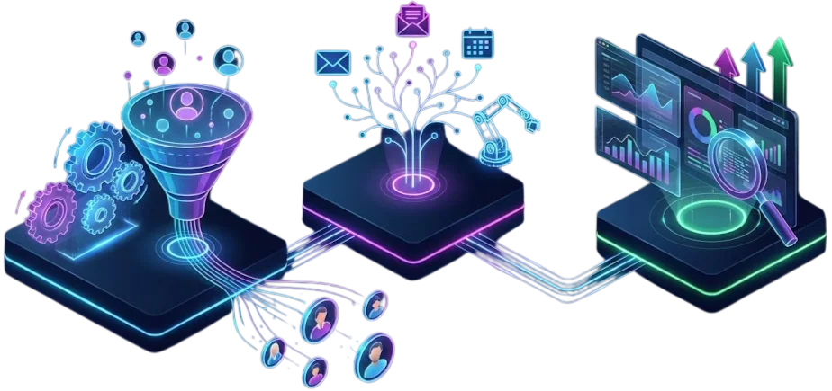
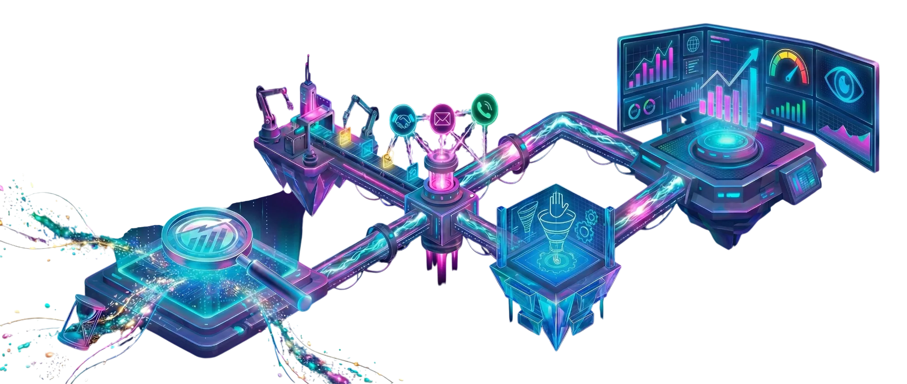

Marketing Automation & Growth
Strategic marketing to attract better clients, organize opportunities and grow with more clarity.
At TrendMakers, we help businesses and brands improve their digital presence, generate more inquiries and convert the opportunities they already receive. We work on strategy, campaigns, content, digital channels and sales follow-up, adding automations when they create value for the process.
Book a call
What do we do in Marketing Automation & Growth?
We transform your marketing actions into a clearer, more organized and measurable system. We analyze how your customers arrive today, which channels you use, which messages work best and how to improve the journey from first contact to sale.
- Attract better commercial opportunities.
- Communicate your value proposition more clearly.
- Organize channels, messages and sales follow-up.
- Gain greater control over marketing and sales results.
From isolated actions to a more organized strategy
If any of this sounds familiar, this service is for you:
- You have social media, a website or campaigns, but you do not know if they are really generating results.
- You receive inquiries, but many are lost because follow-up is missing.
- You want to improve your communication to attract clients that are better aligned with your business.
- You need to organize your commercial channels and understand what is working.
- You feel like you are doing marketing, but without a clear strategy behind it.
What is included in Marketing Automation & Growth?
We adapt the solution to each business, but we usually work across three main blocks:
Block 1 - Marketing Strategy and Positioning
- Diagnosis of your brand, value proposition and current channels.
- Definition of target audiences and commercial opportunities.
- Review of messages, differentiators and communication approach.
- Action plan to improve your digital presence and acquisition.
Block 2 - Campaigns, Content and Digital Channels
- Campaign design for social media, search engines or other relevant channels.
- Content organization according to goals: visibility, trust, inquiries or sales.
- Recommendations to improve landing pages, forms and calls to action.
- Message optimization so every channel has a clear role.
Block 3 - Data, Dashboards & Metrics
- Definition of key KPIs: leads, inquiries, conversion, response times and generated opportunities.
- Executive dashboards to visualize which channels, campaigns and messages generate better results.
- Actionable reports to make decisions with real data and prioritize the highest-impact actions.

How do we deliver this service?
1 - Commercial and Digital Diagnosis
We review your current presence, channels, campaigns, messages and how inquiries arrive today. We detect improvement points and growth opportunities.
2 - Strategy Design
We define a clear strategy to attract better clients, communicate your proposal more clearly and organize the journey from first contact to sale.
3 - Improvement Implementation
We adjust messages, campaigns, content, forms, landing pages and follow-up processes. We also add automations when they help improve inquiry management, sales follow-up or result measurement.
4 - Measurement and Optimization
We measure results, analyze what works and make adjustments to improve inquiry quality, conversion and the return of marketing actions.

What results can you expect?
- A clearer marketing strategy aligned with your commercial goals.
- More qualified inquiries from your digital channels.
- Better communication of your value proposition.
- Fewer lost opportunities due to poor follow-up.
- Greater visibility into which actions generate results.
- A more organized, measurable marketing system oriented toward growth.
Why choose TrendMakers for Marketing Automation & Growth?
- We combine marketing, commercial strategy and data analysis so your actions do not depend only on intuition.
- We think of marketing as a growth tool: not only to have presence, but to generate real opportunities.
- We design applicable and sustainable solutions your team can use without depending on complex structures.
Do you want to organize your marketing and generate better commercial opportunities?
Let's talk about your current situation, channels and goals. In a first meeting, we can quickly detect what to improve so your marketing is clearer, more measurable and more effective.
Book a callOther Services
Branding & Communication
We make sure your brand and communication match the strength of the system running behind it.
Web & E-Commerce Development
We design websites and stores fully integrated with your funnels, CRM and automations.
Consulting, Data & Strategy
We define the direction, priorities and KPIs that will guide your growth.
AI & Innovation Hub
We add advanced AI and automations to scale your operations.